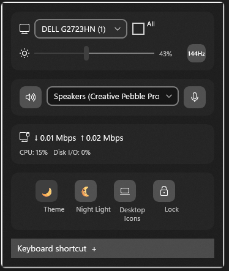

A / DISPLAY
Dial in your display
See connected monitors, adjust brightness where supported, and cycle through available refresh rates.
DDC/CI and panel support varyA better way to get to the little things
TrayPilot gathers the controls you reach for into one neat Windows 11 tray dashboard. A quick glance, a small adjustment, and back to what you were doing.

One small stop, four useful directions
Not another giant settings app. Just a focused flyout for a handful of repeat tasks, grouped so you can spot what you need.
See connected monitors, adjust brightness where supported, and cycle through available refresh rates.
DDC/CI and panel support varyPick a playback device. Reach speaker and microphone mute controls without detouring through multiple menus.
Uses available Windows audio endpointsCheck aggregate download and upload speeds from local adapter counters. Useful context, not a packet sniffer.
No packet or per-app inspectionReach theme, Night Light, power mode, desktop icon visibility, and PC lock actions from the flyout.
Selected settings, not every Windows optionStart simple. Go deeper if you like.
TrayPilot is designed for the person who just wants their headphones back, and the person who likes to tune a multi-monitor desk.
Launch TrayPilot and click its little notification-area icon. Pick an audio device, nudge supported screen brightness, or open a Windows shortcut. You don’t have to configure anything first.
See the easy first stepsDiscover your connected screens, browse available refresh rates, watch changing adapter throughput, then choose a supported global shortcut that suits your keyboard flow.
Browse the detailed notesA shortcut that comes to you
Open the flyout from the tray, or bring it forward from wherever you are. The default is Ctrl + Alt + Space; you can choose another supported combination in the editor.
How to set your shortcut
Straight talk about support
Windows PCs and monitor setups differ. Here’s the useful context before you download.
Windows 11 onlyVersion 22H2 (build 22621) or later. Windows 10 isn’t supported.
Brightness depends on the screenExternal monitor control needs working DDC/CI support. Some laptop panels have a Windows fallback.
HDR information is read-onlyTrayPilot can show HDR capability and state; it does not switch HDR on or off.
Audio is device-levelSwitch playback endpoints and mute speaker or microphone. Per-app audio routing isn’t included.
A small utility, not another account
TrayPilot needs no sign-in and has no cloud dashboard or telemetry. It reads local Windows, display, audio endpoint, and network adapter details to provide its controls. Settings and diagnostics stay on the PC.
Read the full privacy policyThe practical questions
Plain answers about compatibility, privacy, and what the controls actually do.
Read the full quick guideTrayPilot puts selected Windows controls in one system-tray flyout: supported monitor brightness and refresh-rate controls, playback device selection, speaker and microphone mute, live network adapter speed, and selected system settings.
TrayPilot requires Windows 11 version 22H2 (build 22621) or later. Windows 10 is not supported.
Not necessarily. External monitor brightness needs DDC/CI support through the display, cable or adapter, and graphics driver. Some laptop panels support a Windows brightness fallback. Hardware support varies.
No. HDR capability and state are read-only, and per-application audio routing is not included. TrayPilot can switch playback endpoints and control speaker and microphone mute.
No. TrayPilot reads local network adapter byte counters to estimate aggregate download and upload throughput. It does not inspect packet contents or show per-app traffic.
No account or cloud service is required, and TrayPilot does not collect analytics or telemetry. Settings and diagnostic logs are stored locally on the PC.
Click the notification-area tray icon or press the global keyboard shortcut. The default is Ctrl + Alt + Space, and supported key combinations can be configured in the flyout.
No. TrayPilot is a compact shortcut to selected everyday controls. It complements Windows Settings and does not expose every Windows option.
Tiny detours, meet your match
See TrayPilot in the Microsoft Store.
Explore the Store listing Store availability may depend on certification and your region.